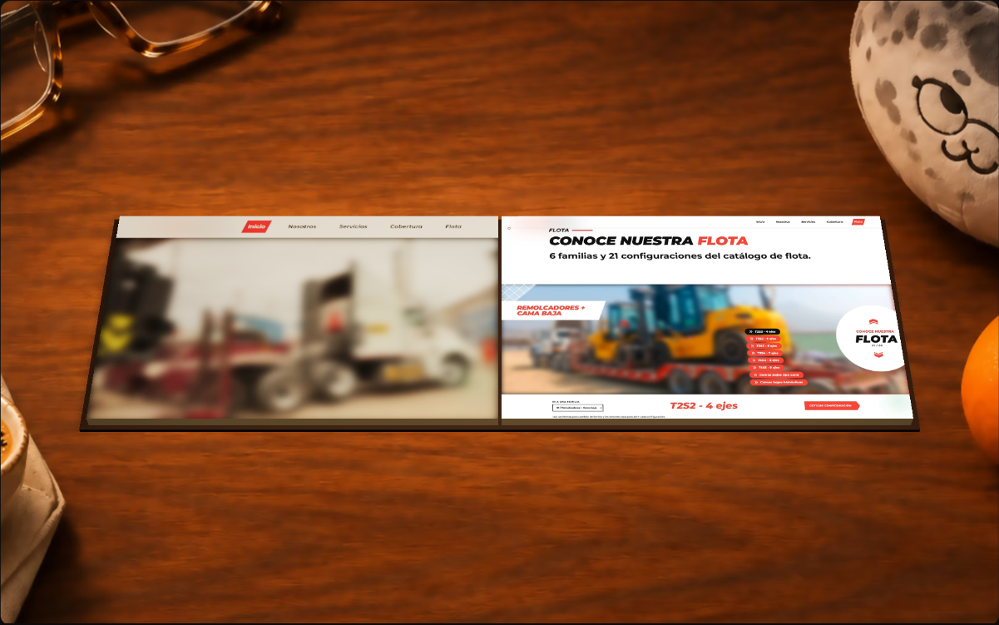
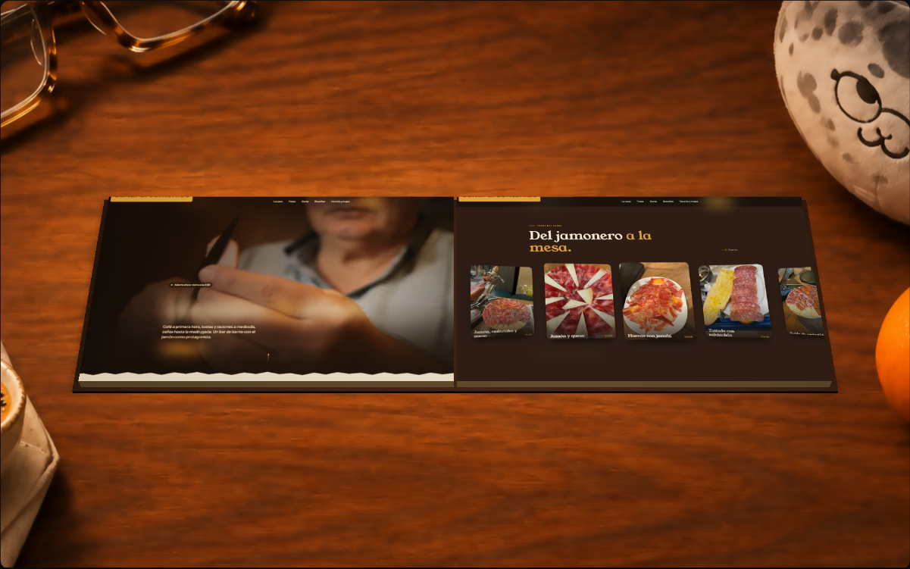
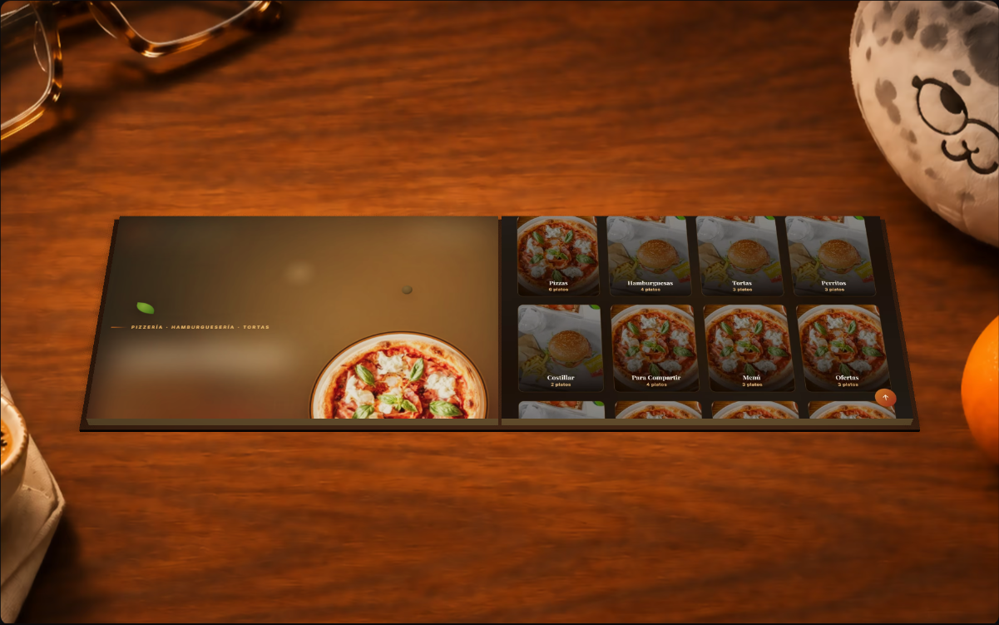

El proyecto a página completa
Cada página del pliego es ahora la pantalla, de borde a borde, sin marco de pergamino. El vídeo arranca solo cuando el pliego se asienta; el puntero lo dirige: su posición de izquierda a derecha sobre la página elige el fotograma, y al salir sigue reproduciéndose. Un clic sobre el vídeo abre la página del proyecto; para pasar página, arrastra, usa las flechas o los botones. Volver.
El puntero dirige el vídeo (Transporte)
Los tres pliegos, 1440 × 900





